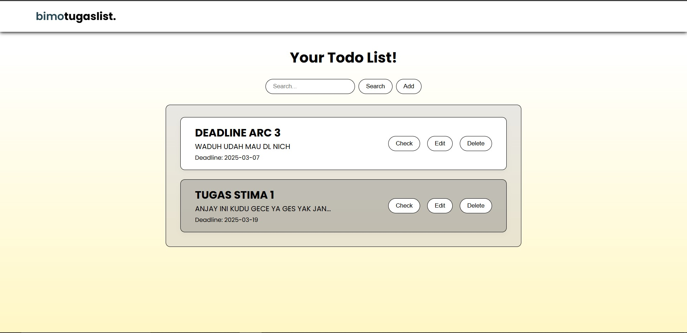
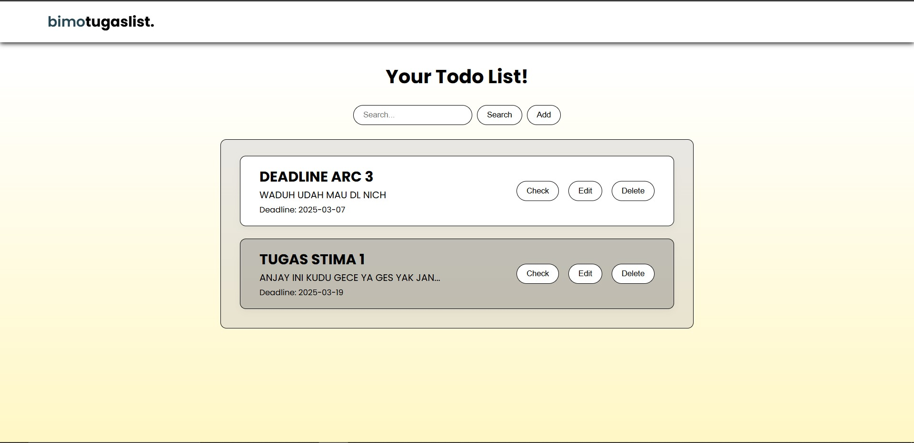

.png) Alchemy discovery web for Little 2 Alchemy Recipe Explorer. This project use React and Go

Simple Todo-List Web App using HTML, Vanilla CSS, and JS.
Alchemy discovery web for Little 2 Alchemy Recipe Explorer. This project use React and Go

Simple Todo-List Web App using HTML, Vanilla CSS, and JS.
 OWCA Logistic Management System. This project use Java to provide the management needs.
OWCA Logistic Management System. This project use Java to provide the management needs.
 CV filter app based on required skills and keyword. Using several pattern matching algorithms in Python.
CV filter app based on required skills and keyword. Using several pattern matching algorithms in Python.
 Linear Algebra Library for Java.
Linear Algebra Library for Java.